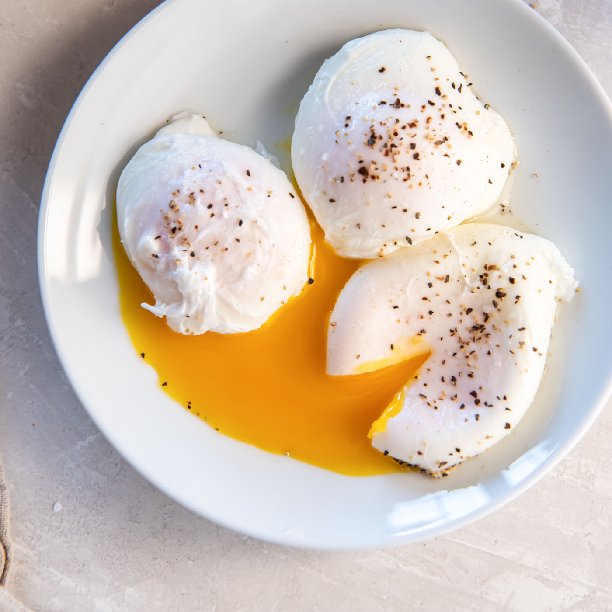

Poached Eggs

How to Make Perfect Poached Eggs
A poached egg is an egg that has been cooked, outside the shell, by poaching, as opposed to simmering or boiling.
This method of preparation can yield more delicately cooked eggs than cooking at higher temperatures such as with boiling water.
Ingredients
Steps
- Bring a pot of water to a gentle boil, then salt the water. Meanwhile, crack an egg (or 2, or 3!) into a small cup.
- With a spoon, begin stirring the boiling water in a large, circular motion.
- When the water is swirling like a tornado, add the eggs. The swirling water will help the egg white wrap around itself as it cooks.
- Cook for about 2 1/2 to 3 minutes.
- Using a slotted spoon, remove the egg (or eggs) to a plate.